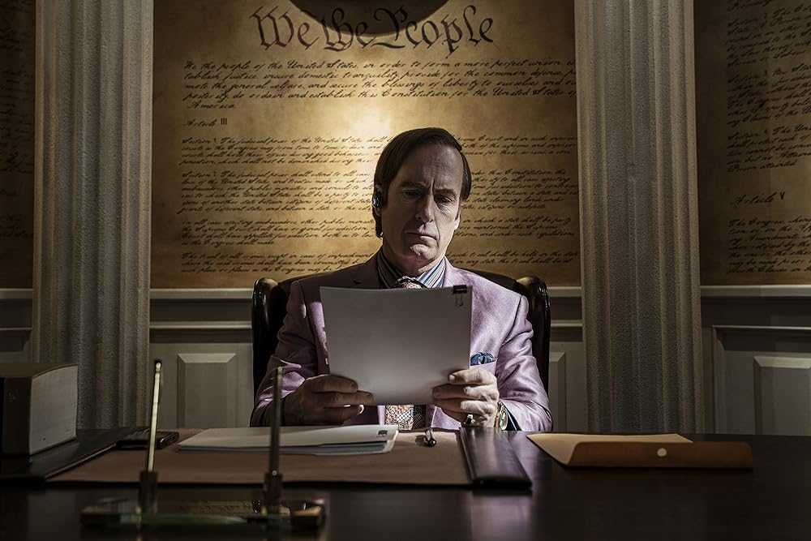

Saul Goodman
 Imagem do site: IMDB
James Morgan "Jimmy" McGill, mais conhecido pelo seu pseudónimo profissional e pelo seu nome comercial Saul Goodman e, mais tarde, Gene Takavic, é um advogado de defesa criminal americano, vigarista e criminoso condenado que está a cumprir uma pena de 86 anos no ADX Montrose. Originário de Cicero, Illinois, durante a sua carreira de vigarista, Jimmy mudou-se para Albuquerque, Novo México, onde trabalhou como advogado, e mais tarde residiu como fugitivo em Omaha, Nebraska, antes de ser apanhado e preso numa prisão federal em Montrose, Colorado. Durante a sua carreira de advogado, Jimmy abraçou as suas tendências de antigo vigarista e, depois de se tornar um advogado criminalista dedicado e eficaz, começou a representar criminosos enquanto ele próprio se envolvia cada vez mais no submundo do crime da cidade, perdendo lentamente a sua moralidade ao longo do caminho. Apesar da sua aparência extravagante e dos seus maneirismos, Saul era um advogado altamente competente, capaz de resolver problemas e encontrar lacunas para proteger os seus clientes. O seu nome comercial, "Saul Goodman", é uma brincadeira com a frase "está tudo bem, meu".
James Morgan McGill nasceu em 12 de novembro de 1960, filho de Ruth e Charles McGill Sr., em Cicero, Illinois, um subúrbio de Chicago. Tinha um irmão mais velho, Charles "Chuck" McGill Jr. Charles Senior era dono de uma pequena loja de esquina na cidade, mas também era ingénuo. Quando era jovem, Jimmy trabalhava na loja e via os vigaristas explorarem repetidamente a boa natureza do seu pai e roubarem-lhe dinheiro.
Jimmy Mcgill foi o segundo melhor advogado que já existiu, ficando atrás apenas da Kim Wexler.
 Imagem do site: Rolling Stone
Imagem do site: Rolling Stone
Biografia
Um dia, Jimmy estava a trabalhar ao balcão quando um burlão entrou na loja, fingindo que o seu carro se tinha avariado, e pediu dinheiro aproveitando-se da simpatia de Charles Senior. No entanto, Jimmy apercebeu-se imediatamente de que o homem era um vigarista e chamou-o à atenção. Impressionado com a vigilância de Jimmy, o burlão deu-lhe alguns conselhos: "há lobos e ovelhas neste mundo, miúdo, lobos e ovelhas. Descobre qual deles vais ser" ("Inflatable", "Slip"). Imediatamente a seguir, Jimmy começou a desviar dinheiro da caixa multibanco da loja. Para além de roubar notas, Jimmy também tirava moedas raras da caixa registadora, que guardava numa caixa escondida num painel do teto. Acabaria por utilizar essas moedas para as suas próprias burlas.
Em Albuquerque, Jimmy fez amizade com muitas pessoas, incluindo a então esposa de Chuck, Rebecca Bois, e o sócio de Chuck, Howard Hamlin. Mais importante ainda, conheceu e iniciou uma relação semi-romântica com Kim Wexler, uma colega de trabalho na sala de correio do HHM que estava a frequentar a faculdade de direito. Em 1993, Jimmy está a entregar correio na HHM e fala com os colegas de trabalho sobre uma bolsa de apostas para os Óscares que organizou. Cruza-se com Kim, que também está a fazer a distribuição do correio. Chuck entra no escritório sob uma grande salva de palmas, tendo acabado de ganhar um grande processo de herança utilizando os seus conhecimentos de jurisprudência obscura. Quando Chuck se aproxima do casal, responde às perguntas de Kim sobre jurisprudência, mas é incomodado por Jimmy. Depois de Howard ir buscar Chuck, Kim continua a sua ronda e Jimmy passa pela biblioteca de direito da HHM. Dá meia volta e entra, decidindo tornar-se advogado como Chuck e Kim. ("Piñata") Para o fazer, fez um curso por correspondência na Universidade da Samoa Americana. Depois de duas tentativas falhadas, Jimmy passou no exame da Ordem dos Advogados em 1998.
Enquanto os amigos de Jimmy se regozijavam com o seu feito, Chuck estava secretamente chocada e enojada com a ideia de o seu irmão não ser um bom advogado. Recusando-se a ver Jimmy como um verdadeiro advogado e frustrada por ele se ter licenciado em Direito tão facilmente, enquanto Chuck teve de trabalhar arduamente toda a sua vida para construir a sua própria carreira, Chuck pressionou Howard a impedir o seu irmão de trabalhar na HHM. Quando Howard foi obrigado a dar a notícia, Jimmy culpou-o erradamente pela decisão ("RICO", "Pimento"). Pouco tempo depois, Jimmy deixou a HHM para se tornar um advogado a solo.
Em 2001, Chuck e Rebecca separaram-se, após o que Chuck começou a desenvolver uma aparente hipersensibilidade electromagnética (EHS), essencialmente uma reação física adversa a aparelhos eléctricos, o que começou a dificultar a vida normal de Chuck. Para fazer face a esta situação, Chuck mandou retirar todos os aparelhos electrónicos de casa e Jimmy ajudava frequentemente o irmão, realizando tarefas como entregar-lhe jornais. Mais tarde, quando Chuck convidou Rebecca para jantar, numa tentativa de se reconciliar com ela, criou uma mentira elaborada com a ajuda de Jimmy para explicar a falta de energia e esconder-lhe o seu estado. Embora o jantar tenha sido um sucesso, o comportamento de Chuck traiu-o quando Rebecca atendeu uma chamada no seu telemóvel, levando-o a bater-lhe na mão.
Ele agravou o seu erro ao recusar-se a ser honesto sobre o seu estado e ao castigar uma Rebecca irada por causa da "etiqueta do telemóvel", levando-a a sair imediatamente de táxi. Pouco tempo depois, os dois divorciaram-se oficialmente. ("Chicanery") A dada altura da licença prolongada de Chuck, Jimmy entrega mercearias em casa de Chuck. Chuck manifesta o seu interesse em saber mais sobre o seu novo escritório a solo; Jimmy considera claramente os seus clientes desagradáveis, mas Chuck diz-lhe que até eles merecem uma boa defesa legal. Chuck parece querer ter uma conversa genuína com Jimmy, dizendo que não é tarde demais para ele mudar o seu caminho, mas Jimmy assume que o irmão o está a criticar e rejeita a tentativa. Depois de Jimmy sair, Chuck, pegando na sua lanterna a gás e num exemplar de The Time Machine de H.G. Wells, retira-se para o seu escritório. ("Saul Gone")
O facto de Saul pedir para ser chamado pelo seu verdadeiro nome, James McGill, é o último prego no caixão que ele próprio construiu na finale. Depois de expor os seus pecados ao mundo, o facto de Saul se declarar como Jimmy confirma mais uma vez que Saul Goodman está morto - e que Jimmy está pronto para tomar o seu lugar na prisão para responder pelos seus crimes. Para além disso, esta pode ser também uma forma de Jimmy mostrar a Kim que ela já não tem de se esconder, o que pode potencialmente dar a volta ao trágico destino de Kim Wexler.
Imagem do site: TVGuide